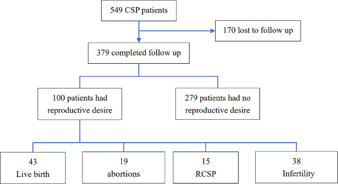
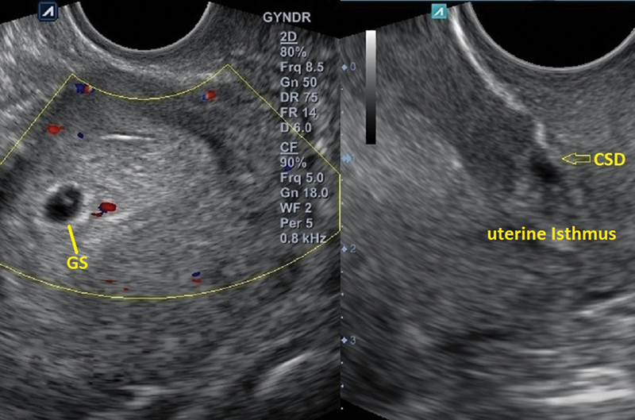
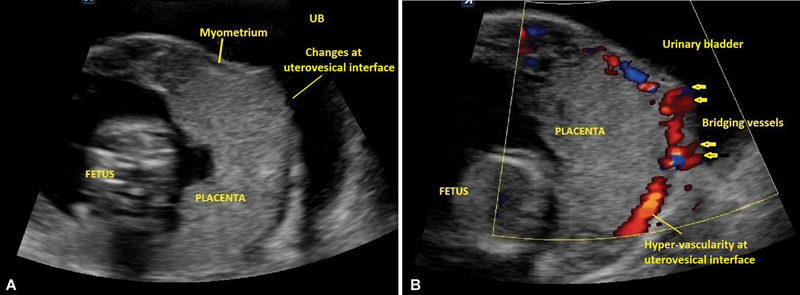
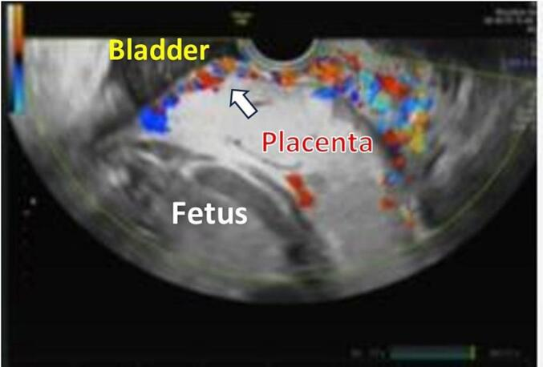

1604 — Thai kỳ sau điều trị chửa ở sẹo mổ lấy thai: tái phát, nhau cài răng lược & kết cục sinh sản / Pregnancy after treated cesarean scar ectopic
Tags: pattern:thai-ky pattern:pas pattern:tai-phat vung:tu-cung-phan-phu protocol:TVUS-thai protocol:MRI-chau
Mức chắc chắn (certainty): tổng hợp y văn (literature synthesis) — các đoàn hệ hồi cứu lớn (83–549 ca chửa sẹo) và 1 tổng quan hình ảnh; chưa có thử nghiệm ngẫu nhiên, nên mọi con số là kết cục quan sát, không phải khuyến cáo mức mạnh.
1. Tổng quan bệnh học – cơ chế hình ảnh
- Câu hỏi lâm sàng sau khi điều trị chửa ở sẹo mổ lấy thai (cesarean scar ectopic pregnancy – CSEP) không phải "đã sạch chưa" mà là "mang thai lại thì sao". Bài 552 dừng ở chẩn đoán – xử trí chỉ điểm; bài này trả lời phần sau: tái phát, nhau cài răng lược (placenta accreta spectrum – PAS), kết cục sinh sản và khoảng cách mang thai.
- Nền giải phẫu: khuyết sẹo (isthmocele) được định nghĩa là chỗ lõm tại sẹo mổ lấy thai sâu ≥ 2 mm trên siêu âm (tổng quan hệ thống, PMC9612856). Mô sẹo là collagen xơ, gần như không có màng rụng (decidua); lớp cơ còn lại (residual myometrial thickness – RMT) mỏng hơn cơ lành.
- TẠI SAO tái phát: gai nuôi (trophoblast) làm tổ lại đúng vùng "cửa yếu" — nơi màng rụng khiếm khuyết và mô sẹo không co rút. Số liệu đoàn hệ: 15/100 (15%) người mong con bị CSEP tái phát (PMC11088178); 8/74 (10,8%) (PMC12443676); 5/76 thai (6,6%) (PMC10173584). Khác biệt lớn vì định nghĩa và mẫu số khác nhau — luôn ghi rõ mẫu số khi trích.
- TẠI SAO PAS: thiếu lớp màng rụng tại sẹo → gai nuôi bám trực tiếp cơ tử cung (accreta), rồi increta/percreta nếu sâu tới thanh mạc – bàng quang. Trong một đoàn hệ 15.439 sản phụ có mổ lấy thai cũ (83 ca có tiền sử CSEP), tiền sử CSEP gắn với PAS aRR 8,31, nhau tiền đạo aRR 6,50, băng huyết sau sinh (PPH) 21,7% vs 1,7% (aRR 2,62), sinh non < 33 tuần aRR 12,05, nhẹ cân aRR 4,19 (PMC13262113). Đây là con số quan trọng nhất để tư vấn: nguy cơ không chỉ là "tái phát chửa sẹo" mà là cả bệnh cảnh rau–nhau.
- Nguy cơ tuyệt đối thì vẫn thấp: PAS gặp 2/51 (3,9%) thai kỳ đạt được sau điều trị, 1 ca phải cắt tử cung vì chảy máu (PMC10173584). Nói cách khác: đa số mang thai lại thành công, nhưng nhóm thất bại thì thất bại nặng.
- TẠI SAO hình ảnh thấy được (vật lý):
- Mất dải sáng rõ (loss of clear zone): bình thường có lớp màng rụng – cơ mảnh giảm echo sau bánh nhau; khi không có màng rụng, không còn dải giảm echo này.
- Hồ máu bánh nhau (placental lacunae): các khoang tĩnh mạch giãn, echo trống, có dòng xoáy trên Doppler — máu chảy chậm trong khoang lớn.
- Mạch bắc cầu (bridging vessels): tân mạch từ bánh nhau xuyên qua cơ tử cung ra thanh mạc/bàng quang — Doppler màu thấy dòng liên tục hai bờ.
- MRI: dải T2 tối trong bánh nhau = fibrin/xơ (T2 ngắn vì mô xơ ít nước tự do), bánh nhau phồng (placental bulge), mất mặt phẳng giữa cơ và bàng quang. Trên DWI, bánh nhau không hạn chế khuếch tán — DWI không có vai trò chẩn đoán PAS.
- Ngưỡng định lượng hay dùng: RMT ≤ 3 mm ở CSEP chỉ điểm nguy cơ vỡ (bài 552); với thai kỳ sau, tỷ lệ RMT/AMT < 50% (AMT = độ dày cơ lân cận) làm tăng nguy cơ PAS nếu bánh nhau nằm mặt trước – thấp (PMC11651832).
2. Mẫu hình + chẩn đoán phân biệt theo vị trí và thời điểm (Gamut)
Bốn câu hỏi theo thứ tự thời gian:
- Túi thai nằm ở đâu so với khuyết sẹo (trong buồng – bám thấp – trong sẹo – cổ tử cung)?
- Có khuyết sẹo không, RMT còn bao nhiêu mm?
- Bánh nhau sau này nằm mặt trước – thấp không? (đây là điều kiện để PAS xảy ra trên sẹo)
- Có dấu hiệu xâm lấn chưa (mất clear zone, hồ máu, mạch bắc cầu, bàng quang không đều)?
Gamut theo vị trí:
- Trong buồng tử cung, bám thấp trên sẹo: thai bình thường bám thấp (low-lying implantation) — phần lớn tiến triển tốt nhưng phải theo dõi vị trí bánh nhau về tam cá nguyệt 2.
- Trong khuyết sẹo: CSEP tái phát (type I/endogenic hoặc II/exogenic — bài 552).
- Mặt trước – thấp, bánh nhau trên sẹo: PAS (accreta → increta → percreta); kèm hoặc không kèm nhau tiền đạo.
- Bánh nhau che lỗ trong nhưng không xâm lấn: nhau tiền đạo (placenta previa) đơn thuần.
- Trong ống cổ tử cung: chửa cổ tử cung (differential của CSEP, bài 552).
- Sau sẩy/thai lưu/hút thai: sản phẩm thai tồn dư (retained products of conception – RPOC) nằm trong túi thừa sẹo — giả "khối u sẹo" (PMC11651832).
3. Bảng so sánh phân biệt (ma trận đối chiếu)
| Thực thể (entity) | Hình ảnh điển hình | Chốt vào (rule-in) | Chốt loại (rule-out) | Gợi ý xác nhận |
|---|---|---|---|---|
| CSEP tái phát | Túi thai trong khuyết sẹo, buồng tử cung rỗng, RMT mỏng | Túi thai trong isthmocele + nghiệm pháp trượt âm tính + Doppler mạch nuôi quanh túi | Túi thai trượt theo đầu dò → thai trong buồng/đang sẩy | TVUS + Doppler; β-hCG; MRI nếu nghi xâm lấn |
| Thai bám thấp bình thường | Túi thai trong buồng, sát nhưng không trong khuyết sẹo; cơ trước còn đều | Có lớp cơ giữa túi thai và bàng quang, không mất liên tục | Túi thai nằm trong khuyết + RMT ≤ 3 mm → CSEP | TVUS lặp 1–2 tuần; đo RMT |
| PAS (accreta/increta/percreta) | Bánh nhau mặt trước–thấp; mất clear zone, hồ máu, cơ < 1 mm, mạch bắc cầu, bàng quang không đều | ≥ 2 dấu hiệu: mất clear zone + hồ máu + mạch bắc cầu (đặc hiệu tăng theo số dấu hiệu) | Còn clear zone đều + cơ ≥ 1 mm + không hồ máu → nhau bám bình thường | TVUS + Doppler (chuẩn đầu tay); MRI khi mặt phẳng sau khó, nghi percreta |
| Nhau tiền đạo đơn thuần | Bánh nhau che lỗ trong, clear zone còn, cơ đều | Che lỗ trong + không dấu xâm lấn | Có mạch bắc cầu/hồ máu + cơ < 1 mm → PAS | TVUS; theo dõi dịch chuyển bánh nhau tam cá nguyệt 2–3 |
| RPOC tại túi thừa sẹo | Khối hỗn hợp trong khuyết sẹo, có nang nhỏ, Doppler tín hiệu thay đổi theo thời gian | Tiền sử hút thai/sẩy + khối trong sẹo + β-hCG giảm chậm | Có túi thai/yolk sac + mạch nuôi kiểu trophoblast → CSEP | TVUS + β-hCG serial; tránh nạo mù |
| Chửa cổ tử cung | Túi thai dưới lỗ trong, eo tử cung rỗng, cổ phình | Túi thai trong ống cổ + eo rỗng | Túi thai ở đoạn dưới mặt trước = CSEP | TVUS; MRI khi cần |
Ghi chú phản biện: các dấu hiệu PAS trên siêu âm có độ nhạy thay đổi lớn giữa người làm; "âm tính" không loại trừ percreta, và "dương tính" đơn lẻ không đủ để mổ cắt tử cung non — cần hội chẩn đa chuyên khoa.
4. Protocol chụp + theo dõi + quyết định
A. Trước khi mang thai lại (tư vấn tiền sản)
- TVUS đánh giá khuyết sẹo (tốt nhất sau mổ lấy thai ≥ 3 tháng, pha noãn sớm khi có dịch trong buồng — PMC11651832): đo chiều sâu, chiều dài khuyết, RMT, AMT, tính RMT/AMT.
- Không có ngưỡng RMT được chứng minh để khuyên mổ sửa sẹo trước khi mang thai. Sửa isthmocele qua nội soi ổ bụng có tỷ lệ thai lâm sàng 62% và sinh sống 72% ở nhóm hiếm muộn (gộp 17 nghiên cứu, PMC12037975) — nhưng đây là dữ liệu quan sát, không chứng minh sửa sẹo dự phòng tốt hơn theo dõi. Chỉ cân nhắc khi hiếm muộn + khuyết sẹo lớn + ứ dịch hoặc đau/ra máu bất thường sau mổ.
- Khoảng cách mang thai: không có khuyến cáo thống nhất. Đoàn hệ ghi nhận khoảng cách trung bình 16,3 ± 10,83 tháng (PMC12443676); một số nghiên cứu loại trừ thai kỳ trong 12 tháng đầu sau điều trị (PMC13103270) — thực hành phổ biến là tránh thai đến khi β-hCG âm tính và tối thiểu 6–12 tháng, nhưng đây là quy ước, không phải bằng chứng.
- Yếu tố tiên lượng xấu hay gặp: sẩy thai sau điều trị là yếu tố duy nhất gắn với CSEP tái phát (OR 11,25; 95% CI 3,30–38,33, PMC11088178); dính buồng tử cung sau điều trị là yếu tố chính khiến không có thai lại (PMC12443676). Vì vậy tránh nạo vét lặp, cân nhắc keo chống dính khi mổ.
B. Thai kỳ sau — lịch theo dõi
- TVUS 6–8 tuần: xác định vị trí túi thai so với sẹo; đo RMT; ghi khoảng cách túi thai – bàng quang (mm). Nếu túi thai trong sẹo → xử trí như bài 552.
- TVUS 11–13 tuần 6 ngày: xác định vị trí bánh nhau (mặt trước? thấp? che lỗ trong?) + đo RMT/AMT tại vị trí bánh nhau. Đây là mốc quyết định theo dõi PAS.
- TVUS 18–24 tuần và 28–32 tuần (nếu bánh nhau mặt trước–thấp hoặc có bất kỳ dấu hiệu nghi): tìm mất clear zone, hồ máu, mạch bắc cầu, cơ < 1 mm, bàng quang không đều.
- MRI tiểu khung có gadolinium khi siêu âm không kết luận, nghi percreta hoặc cần đánh giá độ xâm lấn bàng quang để lên kế hoạch mổ. MRI không thay thế siêu âm trong tầm soát.
- Kế hoạch sinh: nếu nghi PAS → sinh tại trung tâm có ê-kíp đa chuyên khoa (sản – gây mê – niệu – can thiệp mạch – huyết học), mổ lấy thai chủ động 34–36 tuần (ca báo cáo mổ 34 tuần 6 ngày, PMC11914175), có sẵn bóng chèn động mạch chủ/động mạch tử cung và máu dự trù.
C. Kết cục sinh sản — số liệu để tư vấn
| Kết cục | PMC11088178 (n = 100 mong con) | PMC12443676 (n = 74 có thai) | PMC10173584 (n = 51 theo đuổi) |
|---|---|---|---|
| Sinh sống | 43% | 67,6% | 60,8% đủ tháng |
| Sẩy thai | 19% | 2,7% | — |
| Hiếm muộn thứ phát | 38% | 16,2% | 15,7% |
| CSEP tái phát | 15% | 10,8% | 6,6% (5/76 thai) |
| PAS | không nêu | không nêu | 3,9% (2/51, 1 cắt tử cung) |
D. Sơ đồ quyết định
flowchart TD
A[Thai kỳ sau điều trị CSEP: TVUS 6-8 tuần] --> B{Túi thai trong khuyết sẹo?}
B -->|Có| C[Xử trí CSEP tái phát theo bài 552]
B -->|Không| D[TVUS 11-14 tuần: vị trí bánh nhau + RMT/AMT]
D --> E{Bánh nhau mặt trước-thấp hoặc che lỗ trong?}
E -->|Không| F[Theo dõi thai kỳ thường quy]
E -->|Có| G{Có dấu hiệu xâm lấn: mất clear zone, hồ máu, mạch bắc cầu?}
G -->|Không| H[Theo dõi TVUS 18-24 và 28-32 tuần + kế hoạch sinh thường quy]
G -->|Có| I[MRI tiểu khung + hội chẩn đa chuyên khoa]
I --> J[Sinh 34-36 tuần tại trung tâm có ê-kíp PAS, máu dự trù, bóng chèn]
H --> K{Nghi ngờ mới xuất hiện?}
K -->|Có| I
K -->|Không| F

549 ca CSEP điều trị bằng hút thai dưới siêu âm ± nội soi sửa sẹo; 379 theo dõi được; trong 100 ca mong con: 43 sinh sống, 19 sẩy, 15 tái phát, 38 hiếm muộn thứ phát. Nguồn: Reprod Biol Endocrinol 2024 (PMC11088178), CC BY 4.0.5. Biến thể bình thường và cạm bẫy
- Thai bám thấp không phải CSEP: túi thai có thể nằm rất sát khuyết sẹo nhưng vẫn trong buồng; đừng chẩn đoán tái phát nếu không thấy túi nằm trong khuyết. Nghiệm pháp ấn đầu dò (sliding sign) và đo RMT ở mặt phẳng đứng dọc giữa là bắt buộc.
- Dịch trong khuyết sẹo giả túi thai: khuyết sẹo thường chứa ít dịch — không có viền trophoblast dày, không yolk sac, không mạch nuôi bao quanh.
- "Đã điều trị CSEP" không có nghĩa "sẹo đã lành": vẫn thấy khuyết sẹo nhiều năm; khuyết sẹo tồn tại là nền nguy cơ, không phải bằng chứng tái phát.
- Bẫy hài lòng (satisfaction of search): thấy thai trong buồng rồi bỏ qua việc đo vị trí bánh nhau ở 11–14 tuần — đây là bước bị bỏ nhiều nhất và là bước quyết định phát hiện PAS.
- Đo RMT sai mặt phẳng: đo chếch làm cơ trông dày hơn thực tế; đo tại điểm mỏng nhất, vuông góc với thành trước.
- Siêu âm âm tính không loại trừ percreta, đặc biệt khi bánh nhau mặt sau hoặc bệnh nhân béo; nghi ngờ lâm sàng → MRI.
- Tránh nạo/hút lặp sau CSEP: sẩy thai sau điều trị làm tăng nguy cơ tái phát (OR 11,25) và dính buồng tử cung làm giảm khả năng có thai — ưu tiên xử trí nội khoa/theo dõi khi an toàn.
6. Tự lượng giá — Blind Quiz
Ca 1 — Thai 5 tuần trên người có mổ lấy thai cũ; không đau, không ra máu.

- Gợi ý: ảnh trái có Doppler quanh túi thai; ảnh phải là mặt phẳng dọc qua eo tử cung.
- Câu hỏi: Túi thai nằm ở đâu? Cấu trúc mũi tên là gì? Chỉ số nào cần đo và vì sao nó quan trọng cho thai kỳ này (không phải cho chẩn đoán CSEP)?
Bấm để hiện đáp án (findings + chẩn đoán)
- Dấu hiệu: túi thai (GS) trong buồng tử cung, sát đoạn dưới; phía sau có khuyết sẹo (CSD/isthmocele) ở eo tử cung.
- Chỉ số cần đo: RMT và AMT, tính RMT/AMT. Ca này tỷ lệ < 50% — nếu sau này bánh nhau nằm mặt trước – thấp, nguy cơ PAS tăng.
- Chẩn đoán: thai trong buồng trên nền khuyết sẹo, không phải CSEP. Việc cần làm không phải mổ mà là hẹn TVUS 11–14 tuần xác định vị trí bánh nhau.
- Nguồn ảnh: Indian J Radiol Imaging 2025 (PMC11651832), Fig. 4 — CC BY-NC-ND 4.0, dùng nguyên bản.
Ca 2 — Thai 7 tuần chẩn đoán CSEP, thai phụ quyết định giữ thai; theo dõi đến 13 tuần 5 ngày.

- Câu hỏi: Ảnh B cho thấy dòng chảy ở đâu? Dấu hiệu này gọi là gì và nói lên điều gì về độ xâm lấn?
Bấm để hiện đáp án (findings + chẩn đoán)
- Dấu hiệu: (A) không còn lớp cơ giữa bánh nhau và bàng quang, đường echo bàng quang mất đều; (B) Doppler màu có mạch bắc cầu (bridging vessels) vượt mặt phẳng bàng quang – tử cung và tăng sinh mạch mạnh ở mặt tiếp giáp.
- Chẩn đoán: CSEP tiến triển thành PAS — mạch bắc cầu + mất cơ là dấu hiệu xâm lấn sâu (nghi increta/percreta).
- Ý nghĩa: thai giữ được nhưng phải sinh tại trung tâm có ê-kíp PAS; ca tương tự trong y văn nghi PAS từ 15–16 tuần, chẩn đoán percreta 22 tuần, mổ ở 34 tuần 6 ngày (PMC11914175).
- Nguồn ảnh: Indian J Radiol Imaging 2025 (PMC11651832), Fig. 9 — CC BY-NC-ND 4.0, dùng nguyên bản.
Ca 3 — Thai 31 tuần, tiền sử CSEP đã điều trị; siêu âm mặt trước tử cung.

- Câu hỏi: Mũi tên trỏ vào đâu? Vì sao đây là dấu hiệu đáng lo hơn "nhau tiền đạo đơn thuần"?
Bấm để hiện đáp án (findings + chẩn đoán)
- Dấu hiệu: tăng sinh mạch (hypervascularity) trong bánh nhau ngay sát thành trước, vùng mặt tiếp giáp tử cung – bàng quang.
- Chẩn đoán: PAS trên nền sẹo mổ lấy thai cũ. Khác nhau tiền đạo đơn thuần ở chỗ có tân mạch xuyên qua cơ và mất mặt phẳng sạch; nhau tiền đạo chỉ sai vị trí, không xâm lấn.
- Xử trí: mổ chủ động 34–36 tuần với ê-kíp đa chuyên khoa; ca nguồn mổ 34 tuần 6 ngày, bảo tồn tử cung bằng phẫu thuật bảo tồn một thì cải biên.
- Nguồn ảnh: Int J Surg Case Rep 2025 (PMC11914175), Fig. 2 — CC BY-NC-ND 4.0, dùng nguyên bản.
Bài liên quan chéo
- 552 – Chửa ở sẹo mổ lấy thai & chửa góc (chẩn đoán – xử trí chỉ điểm)
- 560 – Nhau cài răng lược: lacunae, cơ < 1 mm & dải T2
- 563 – Bất thường rau–bánh nhau sớm
- 550 – Thai sớm: SRU, ngoài tử cung & vòng lửa
- 1605 – Endometrioma & tư vấn tiền sản: mổ dự phòng hay theo dõi
Ảnh
- Nguồn + giấy phép từng ảnh:
images/CREDITS.md. Hai ảnh từ PMC11651832 và PMC11914175 là CC BY-NC-ND 4.0 → giữ nguyên bản, không crop, không ghép. - Ảnh sơ đồ kết cục từ PMC11088178 là CC BY 4.0.
Không dùng để chẩn đoán độc lập khi chưa có người hướng dẫn.